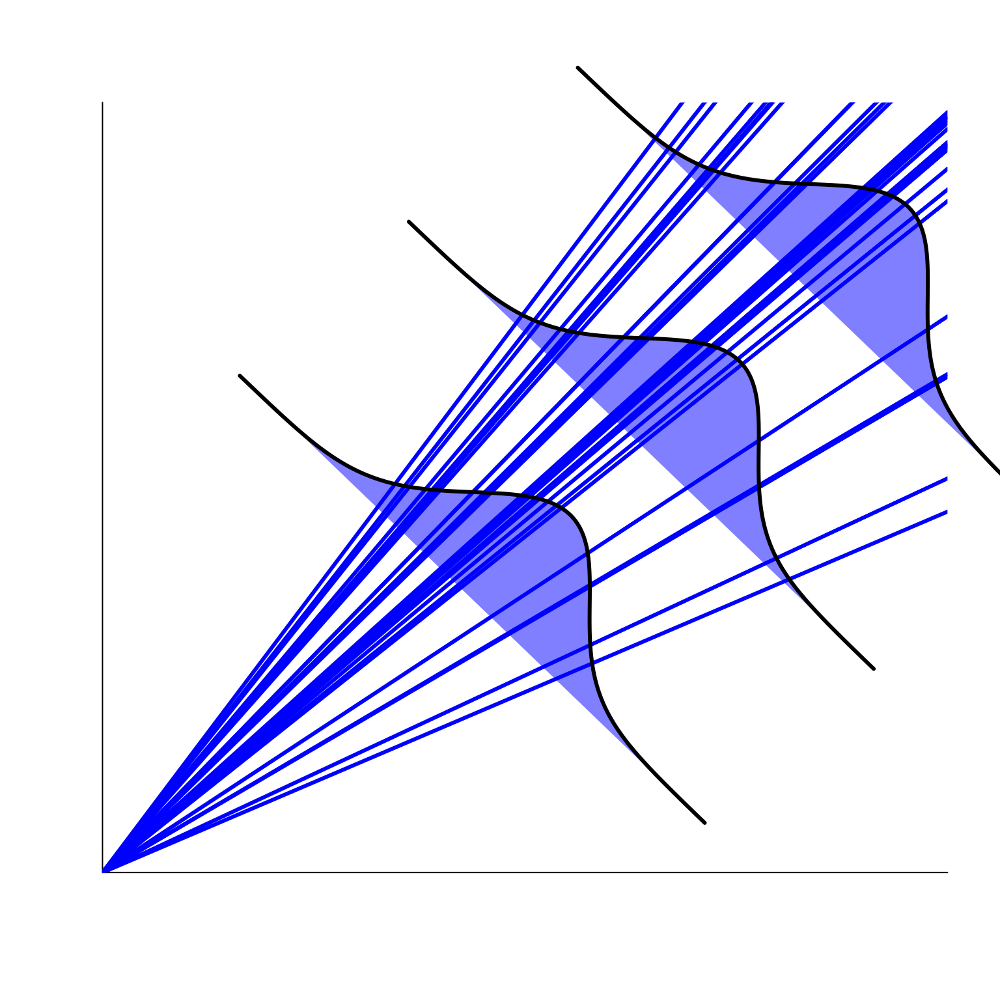

‘Simple’ hierarchical models
Guillaume Blanchet – Andrew MacDonald
2024-05-01
“Simple” hierarchical model
Here, we use the term “simple” in a rather loose way to discuss hierarchical models on one parameter without any constrains, whether they are spatial, temporal, phylogenetic or others.
Futhermore, for most of this lecture, we will focus on models with a Gaussian error term to develop the underlying theory.
When we will have done this, it will be reasonably straight forward to move to non-Gaussian hierarchical model.
The “|”
Most of you have probably already used the packages lme4 or brms to build hierarchical models and so you have used the | to include a hierachy in your model.
But do you know what the underlying mathematical structure of the model you built look like ? Does it really answer the question you were asking ?
Let’s look at different lme4 models to learn about some basic (and not so basic!) hierarchical models.
A bit of notation
Before we get into writing math, we need to define a bit of notation in addition of the one we have used so far.
Specifically, when define a hierarchy in a model, it is common to do this using at least one factor. Mathematically, we will define the different level of a factor in a model by a subscript.
We will use square brackets to define the sample.
Example
\[\mathbf{Z}_{f[i]}\] This means that, within \(\mathbf{Z}\), we focus on the \(i^{\text{th}}\) factor \(f\).
. . .
Note The \(i^{\text{th}}\) sample of factor \(f\) maybe associated to any level of factor \(f\).
Hierarchy on the intercept
lme4 notation used y ~ (1 | f) or y ~ 1 + (1 | f)
This model assumes there is a hierarchy solely on the intercept.
Mathematically, it can be translated to
\[\mathbf{y} \sim \mathcal{MVN}(\mathbf{b}_{f},\sigma^2\mathbf{I})\]
or
\[y_i = b_{{f[i]}} + \varepsilon \quad \forall\quad i = 1\dots n\]
where
\[\mathbf{b}_f \sim \mathcal{N}(\mu_f, \sigma^2_f)\]
Hierarchy on the intercept

Hierarchy on the slopes
lme4 notation : y ~ 1 + (x | f)
This model assumes there is a hierarchy on the parameters associated to variable x.
Mathematically, it can be translated to
\[\mathbf{y} \sim \mathcal{MVN}(\beta_0 + \mathbf{z}\mathbf{b}_{f},\sigma^2\mathbf{I})\]
or
\[y_i = \beta_0 + b_{f[i]}z_i + \varepsilon \quad\forall\quad i = 1\dots n\]
where
\(\mathbf{z}\) is an explanatory variable, \(z_i\) the \(i^{\text{th}}\) values of \(\mathbf{z}\) and
\[\mathbf{b}_f \sim \mathcal{N}(\mu_f, \sigma^2_f)\]
Hierarchy on the slopes

Hierarchy on intercept and slope
Mathematically speaking, what are the differences between having a hierarchy on the intercept and a hierarchy on the slope ? Any idea ?
Hierarchy on intercept and slope
Answer : Very little !
Actually, if we return to the way \(\mathbf{b}\) is defined we see that in both case it is defined as
\[\mathbf{b}_f \sim \mathcal{N}(\mu_f, \sigma^2_f)\] with the sole difference that \(\mathbf{b}\) is linked to an explanatory variable when the hierarchy is on the slope, while when the hierarchy is on the intercept it is not linked to any explanatory variable.
Well… Actually… When a hierarchy is applied on the intercept it is technically associated to a constant explanatory variable.
How many levels ?
A common question that often gets asked is :
“How many level is enough ?”
This is a simple questions that sadly does not have a simple answer.
How many levels ?
In these types of models we are interested in estimating the variance parameter \(\sigma^2_f\) in
\[\mathbf{b}_f \sim \mathcal{N}(\mu_f, \sigma^2_f)\] to get the best estimation of \(\mathbf{b}\).
So, another way to ask this question is: “What is the minimum number of samples needed to properly estimate the variance of a Gaussian distribution?”
However, in the context of how we defined hierarchical models, a sample amounts to being the level of a factor.
How many levels ?
What is the minimum number of samples needed to properly estimate the variance of a Gaussian distribution?
Is 3 enough ?
True variance : 0.25
Estimated variance : 0.234
How many levels ?
What is the minimum number of samples needed to properly estimate the variance of a Gaussian distribution?
Maybe 5 ?
True variance : 0.25
Estimated variance : 0.12
How many levels ?
What is the minimum number of samples needed to properly estimate the variance of a Gaussian distribution?
Or 10 ?
True variance : 0.25
Estimated variance : 0.174
How many levels ?
What is the minimum number of samples needed to properly estimate the variance of a Gaussian distribution?
Or 50 ?
True variance : 0.25
Estimated variance : 0.331
How many levels ?
What is the minimum number of samples needed to properly estimate the variance of a Gaussian distribution?
Or 100 ?
True variance : 0.25
Estimated variance : 0.271
How many levels ?
What is the minimum number of samples needed to properly estimate the variance of a Gaussian distribution?
Or 1000 ?
True variance : 0.25
Estimated variance : 0.251
How many levels ?
There is a consensus among researchers working intimately with hierarchical models that when the interest is to properly estimate the variance parameter \(\sigma^2\), 5 or 6 levels is the extreme minimum.
In the book Richly Parameterized Linear Models: Additive, Time Series, and Spatial Models Using Random Effects, James S. Hodges (2016) makes this very thoughtful statement :
“Treating factors with small numbers of levels as random will in the best case lead to very small and/or imprecise estimates of random effects; in the worst case it will lead to various numerical difficulties such as lack of convergence, zero variance estimates, etc.”
How many levels ?
So, what to do if the number of level is not high enough for your comfort ?
You can still use the hierarchy in your model but focus on the mean of the levels instead of the variance.
How does this translate mathematically with what we have seen so far ?
Hierarchy on the intercept’s mean
\[\mathbf{y} \sim \mathcal{MVN}(\boldsymbol{\beta}_{f},\sigma_\mathbf{y}^2\mathbf{I})\] or
\[y_i = \beta_{f[i]} + \varepsilon \quad \forall\quad i = 1\dots n\]
In this model, we assume that \(\boldsymbol{\beta}_{f}\) is distributed as
\[\boldsymbol{\beta}_{f} \sim \mathcal{N}(\mu_{f}, \sigma^2_{f})\]
This means that all samples among the levels of factor \(f\) are used to estimate \(\boldsymbol{\beta}_{f}\).
By developping our model this way, we focus on estimating the mean of groups in the hierarchy instead of only the variance.
Hierarchy on the intercept’s mean
Let’s take a deeper look at \[\boldsymbol{\beta}_{f} \sim \mathcal{N}(\mu_{f}, \sigma^2_{f})\]
When we study this way of sampling \(\boldsymbol{\beta}_{f}\), although our interest is more on \(\mu_{f}\), we also have to acount for the variance term \(\sigma^2_{f}\).
Note: This is essentially the same thing as a one-way analysis of variance.
Hierarchy on the intercept’s mean

Hierarchy on the slope’s mean
Developping a hierarchy on the slope’s mean translate mathematically in a very similar way as it does for the intercept.
\[\mathbf{y} \sim \mathcal{MVN}(\boldsymbol{\beta}_0+\mathbf{X}\boldsymbol{\beta}_{f},\sigma_\mathbf{y}^2\mathbf{I})\] or
\[y_i = \beta_0 + \beta_{f[i]}x_i + \varepsilon \quad \forall\quad i = 1\dots n\]
In this model, we assume that \(\boldsymbol{\beta}_{f}\) is distributed as
\[\boldsymbol{\beta}_{f} \sim \mathcal{N}(\mu_{f}, \sigma^2_{f})\]
This means that all the samples among the levels of factor \(f\) are used to estimate \(\boldsymbol{\beta}_{f}\).
By developping our model this way, we focus on estimating the average slope for each group in the hierarchy instead of only the variance.
Hierarchy on the slope’s mean

Tracking the estimated parameters
As can be seen, it is important in hierarchical model to track the different parameters that are estimated to make sure we can make proper inferences with our model.
However, we need to be careful because the notation used can play tricks on us. This is especially true when using matrix notation.
For example, in
\[\mathbf{b}_{f}\sim \mathcal{MVN}(\mathbf{0}, \mathbf{\Sigma})\] the number of levels are not explicitly defined and it is not clear if \(\mathbf{\Sigma}\) includes the same variance value on the diagonal or different ones and whether the off diagonal elements are 0 or not.
In any case, make sure to keep track of the estimated parameters so that you can better understand the limits of the model you are building and using.
Choosing the right model
Although these different models are mathematically quite similar, they approach very different biological questions.
A comparison of the different figures caricaturizing how each model works should give a good insight about what each model can do.
It is thus important to make sure you design your biological question well so that deciding on which model to use is reasonably straight forward.